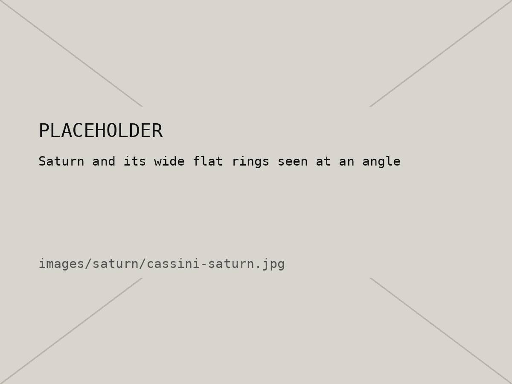
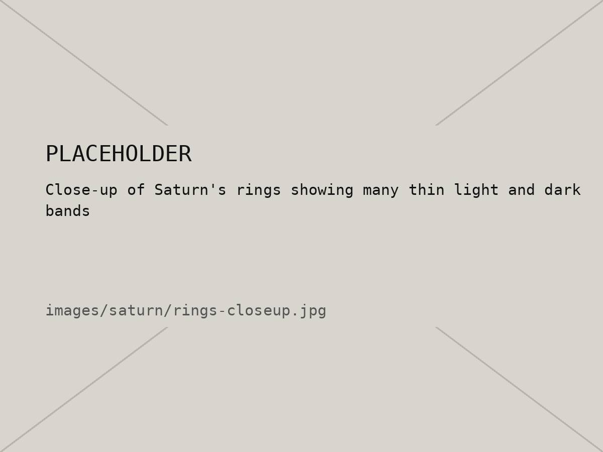

08 / 10 — Planet 6
Saturn
The one with the rings. Light enough to float, in theory.
01 — Intro
Saturn is the second-biggest planet and, like Jupiter, it's mostly hydrogen and helium. It's so light for its size that it would float in water, if you could somehow find a bathtub big enough.
The rings are what everyone knows it for. They're made of billions of chunks of ice and rock, some as small as dust and some as big as a house. They stretch out about 280,000 km from the planet but are usually only around 10 meters thick, which is kind of wild. Saturn also has the most known moons of any planet, including Titan, which is bigger than Mercury.
02 — Quick facts
| Distance from the Sun | About 1.4 billion km (9.5 AU) |
|---|---|
| Diameter | 116,460 km (about 9× Earth) |
| Length of a day | About 10.7 hours |
| Length of a year | About 29 Earth years |
| Rings | Mostly ice, usually about 10 m thick |
| Density | Less than water |
| Moons | 274 known, the most of any planet |
03 — Images


04 — Slideshow
More from Cassini, which orbited Saturn for 13 years. Use the buttons or your arrow keys.